Inteligencia Artificial
Claudio Vaucheret
Problemas de Satisfacción de Restriccciones
Created: 2023-10-07 sáb 22:27
Definición de un CSP
Problemas de Satisfacción de Restricciones
Problema de Búsqueda Estándar:
El estado es atómico o indivisible; una "caja negra" sin estructura interna. El estado permite determinar si es meta, sucesor, etc.
Constraint Satisfaction Problems (CSP):
Usamos una representación factorizada de cada estado. El estado es definido por:
- variables \(X_i\) con valores del dominio \(D_i\).
- El test de meta es cuando cada variable tiene un valor que satisface todas las restricciones sobre esa misma variable.
Problemas de Satisfacción de Restricciones
- Es un ejemplo simple de un Lenguaje de Representación Formal. Muchos problemas se representan naturalmente como un CSP.
- Permite algoritmos de propósito general con más poder que los algoritmos estándares. Permite resolver problemas intratables con algoritmos de búsqueda estándar.
Ejemplo: Coloreo de Mapas
| Variables | Dominios |
| \(WA, NT, Q, NSW, V, SA, T\) | \(D_i = \{red,green,blue\}\) |
Restricciones Regiones adyacentes deben tener colores diferentes. e.g., \(WA\neq NT\) o \((WA,NT) \in \{(red,green),(red,blue),(green,red),(green,blue),\ldots\}\)
Ejemplo: Coloreo de Mapas
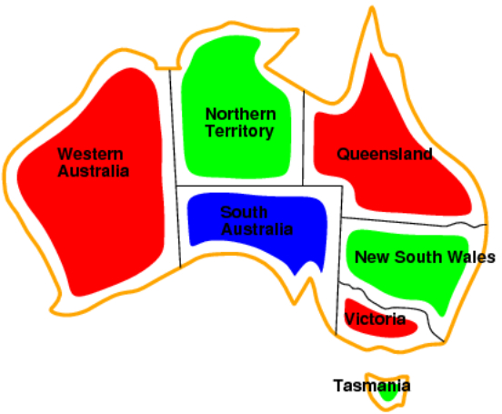
Las Soluciones son asignaciones que satisfacen todas las restricciones.
Ejemplo
\(\{WA = red,NT = green,Q = red,NSW = green,V = red,SA = blue ,T = green\}\)
Definición de un CSP
Un CSP consiste de:
- un conjunto de variables \(X=\{X_1,\ldots,X_n\}\).
- un conjunto de dominios, uno para cada variable, \(D=\{D_1,\ldots,D_n\}\). Cada dominio \(D_i\) consiste de un conjunto de valores permitidos \(\{v_1,\ldots,v_k\}\) para la variable \(X_i\).
- un conjunto \(C\) de restricciones que especifican las combinaciones permitidas de los valores.
Solución a un CSP
Es una asignación consistente y completa
Una asignación es consistente si no viola ninguna restricción y es completa si cada variable está asignada.
Grafos de restricciones
- CSP binarios Cada restricción relaciona a lo sumo dos variables.
Grafos de restricciones: Los nodos son variables y los arcos muestran restricciones entre las variables.
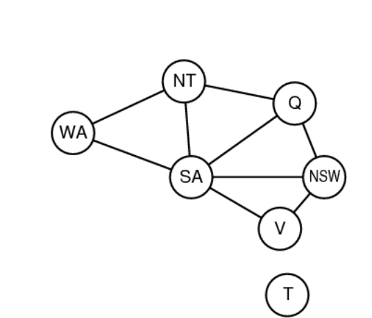 Grafos de restricciones Algoritmos de CSP de propósito general usan la estructura de grafos para acelerar la búsqueda. E.g. Tasmania es un subproblema independiente.
Variedad de CSPs
Variables Discretas
- Dominios Finitos: tamaño \(d\) \(\implies\) \(O(d^n)\) asignaciones completas. Ej. CSPs booleanos: Satisfacibilidad booleana (NP-completo).
- Dominios infinitos. Ej. scheduling, las variables son días start/end para cada tarea y el dominio naturales. Se necesita un lenguaje de restricciones. Ej. \(StartJob_1 + 5 \leq StartJob_3\)
- Problemas con restricciones lineales son solubles; no-lineales son indecidibles.
Variedad de Restricciones
- Unaria Restricciones que involucran una única variable, e.g. \(SA\neq green\)
- Binaria Restricciones que involucran pares de variables, e.g. \(SA\neq WA\)
- High-order: Globales Restricciones que involucran 3 o más variables, e.g. cryptoaritméticas. Se utilizan hipergrafos de restricciones.
Preferencias (restricciones suaves) E.g., red es mejor que green. A menudo representado por un costo para cada asignación de variables \(\rightarrow\) Problema de Optimización de Restricciones.
Ejemplo: Criptoaritmética
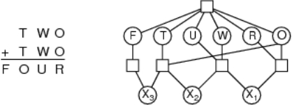
- Variables \(F\ T\ U\ W\ R\ O\ X_1\ X_2\ X_3\)
- Dominios \(\{0,1,2,3,4,5,6,7,8,9\}\)
Restricciones \(alldiff(F,T,U,W,R,O)\); \(O + O = R + 10\cdot X_1\)
Backtracking para CSPs
Formulación de búsqueda estándar (incremental)
- Estado Inicial: La asignación vacía, \(\emptyset\).
- Función sucesor: Asignaciones Parciales Asigna un valor a una variable no asignada que no entra en conflicto con la actual asignación \(\implies\) falla si no hay asignación legal.
- Test de meta: Si la asignación actual está completa.
Formulación de búsqueda estándar (incremental)
- Es la misma para todo CSP.
- Toda solución aparece en la profundidad \(n\), siendo \(n\) la cantidad de variables \(\implies\) se puede usar búsqueda Depth-First.
El camino es irrelevante, por lo tanto, podríamos utilizar la formulación de estado completo, en vez de asignaciones parciales.
Un CSP con \(n\) variables de tamaño de dominio \(d\), tenemos un factor de ramificación de \(nd\); en el siguiente nivel \(n(d-1)*n*d\) y así sucesivamente. En general, tenemos \(b = (n-\ell)d\) nodos nuevos a profundidad \(\ell\), por cada nodo del nivel anterior.
Por lo tanto, tenemos \(nd * (n-1)d * \ldots *d=\) \(n!d^n\) hojas. :( Y solamente son \(d^n\) asignaciones completas posibles.
HMMMMMMMMMM!!!!!!!!!!!!!!!!
Bactracking Search
- La asignación de variables es conmutativa. Un problema es conmutativo si el orden de la aplicación de un conjunto de acciones no tiene efecto diferente sobre la asignación parcial. Ejemplo, i.e., [ \(WA = red\) - \(NT = green\)] es lo mismo que [ \(NT = green\) - \(WA = red\)]
- Solo se necesita considerar asignaciones a una única variable en cada nodo \(\implies\) Factor de Ramificación \(b = d\) y así tenemos \(d^n\) hojas. Puede resolver el problema de n-reinas para \(n \approx 25\).
- Depth-first search para CSPs con asignación de una única variable se llama Backtracking Search
Backtracking search
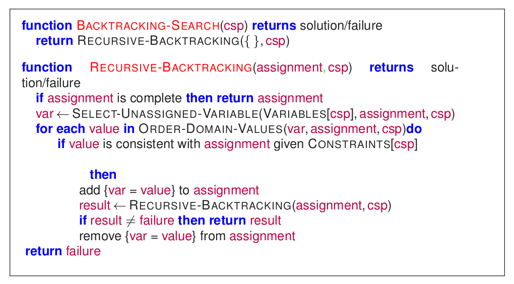
Ejemplo
Ejemplo
Ejemplo
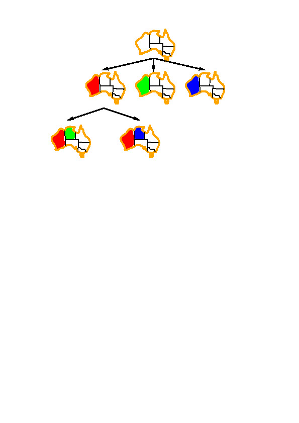
Ejemplo
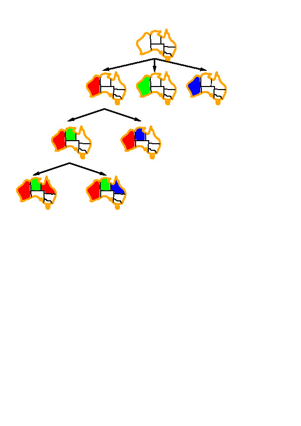
Mejorando la eficiencia del Backtracking
Métodos que pueden mejorar la velocidad
Métodos de propósito general pueden mejorar mucho el backtracking:
- ¿Cuál variable debería asignarse primero?
- ¿En qué orden deberían ser tratados sus valores?
- ¿Podemos detectar fallas inevitables con anticipación?
- ¿Podemos aprovecharnos de la estructura del problema?
Mínimos valores restantes
Mínimos valores restantes
Heurística
Elegir la variable con menos valores legales.
Variable que más restringe las demás
Variable que más restringe las demás
Heurística de Grados
Elegir primero la variable con más restricciones sobre las variables restantes.
SA es de grado 5.
T es de grado 0.
Las demás son de grado 3 o 2.
Valor menos restringido
Valor menos restringido
Heurística
Dada una variable, elegir el valor menos restrictivo: aquel que deja menos valores en las variables restantes.
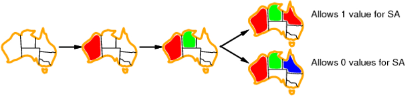
Combinando estas tres heurísticas es posible realizar el problema de 1000-reinas.
Chequeo anticipado
Chequeo anticipado
Idea:
- Mantener la información de los valores legales restantes de las variables sin asignar.
- Terminar la búsqueda cuando alguna variable no tenga valores legales.
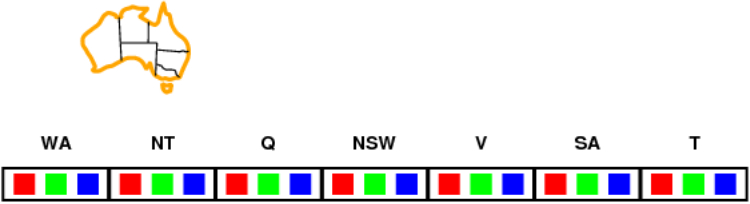
Chequeo anticipado
Idea:
- Mantener la información de los valores legales restantes de las variables sin asignar.
- Terminar la búsqueda cuando alguna variable no tenga valores legales.
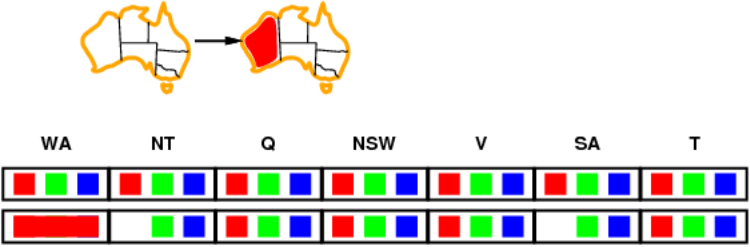
Chequeo anticipado
Idea:
- Mantener la información de los valores legales restantes de las variables sin asignar.
- Terminar la búsqueda cuando alguna variable no tenga valores legales.
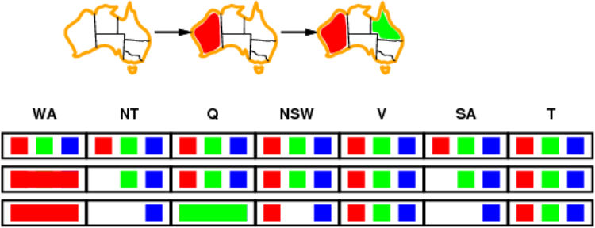
Chequeo anticipado
Idea:
- Mantener la información de los valores legales restantes de las variables sin asignar.
- Terminar la búsqueda cuando alguna variable no tenga valores legales.
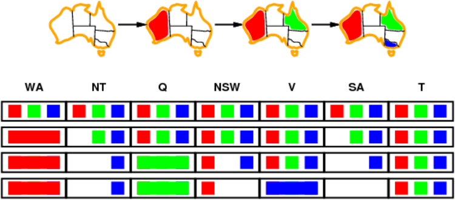
Propagación de restricciones
Propagación de restricciones
El chequeo anticipado propaga la información desde variables instanciadas a no instanciadas, pero no provee detección anticipada para todas las fallas.
\(NT\) y \(SA\) no pueden ser ambas azules!
La propagación de restricciones fuerza repetidamente las restricciones localmente.
Consistencia de arcos
Consistencia de arcos
La forma más simple de propagación hace a cada arco consistente.
Un arco \(X\rightarrow Y\) es consistente si y solamente si para todo valor \(x\) de \(X\) existe algún valor permitido \(y\).
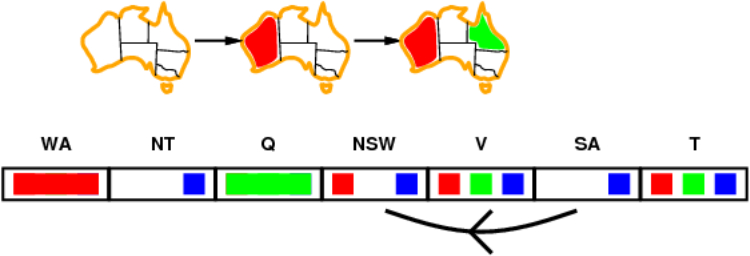
Consistencia de arcos
La forma más simple de propagación hace a cada arco consistente.
Un arco \(X\rightarrow Y\) es consistente si y solamente si para todo valor \(x\) de \(X\) existe algún valor permitido \(y\).
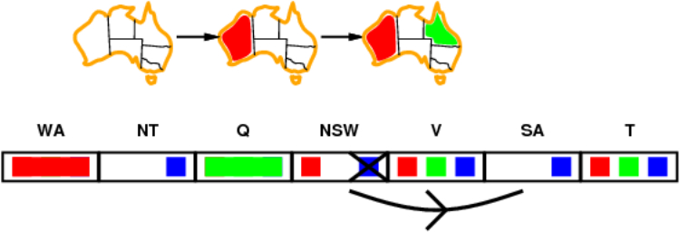
Consistencia de arcos
La forma más simple de propagación hace a cada arco consistente.
Un arco \(X\rightarrow Y\) es consistente si y solamente si para todo valor \(x\) de \(X\) existe algún valor permitido \(y\).
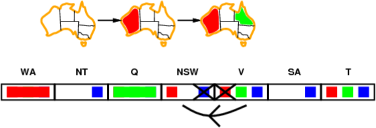
Si \(X\) pierde un valor, los vecinos de \(X\) necesitan ser rechequeados.
Consistencia de arcos
La forma más simple de propagación hace a cada arco consistente.
Un arco \(X\rightarrow Y\) es consistente si y solamente si para todo valor \(x\) de \(X\) existe algún valor permitido \(y\).
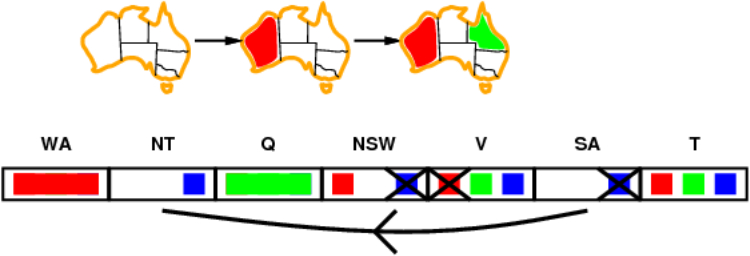
La consistencia de arcos detecta fallas más temprano que chequeo anticipado. Puede se ejecutado como un preprocesamiento o después de cada asignación.
Consistencia de nodos
- Una variable simple es nodo consistente si todos los valores en el dominio de la variable satisfacen las restricciones unarias de la variable.
- Supongamos que la gente de South Australia odia el verde. Luego pondríamos una restricción más al problema: \[SA\neq green\] Luego el dominio de SA \(\{green, red, blue\}\) no sería nodo consistente ya que viola la restricción anterior.
- El domino que hace al nodo consistente es \(\{ red, blue\}\)
Algoritmo Consistencia de Arcos AC-3
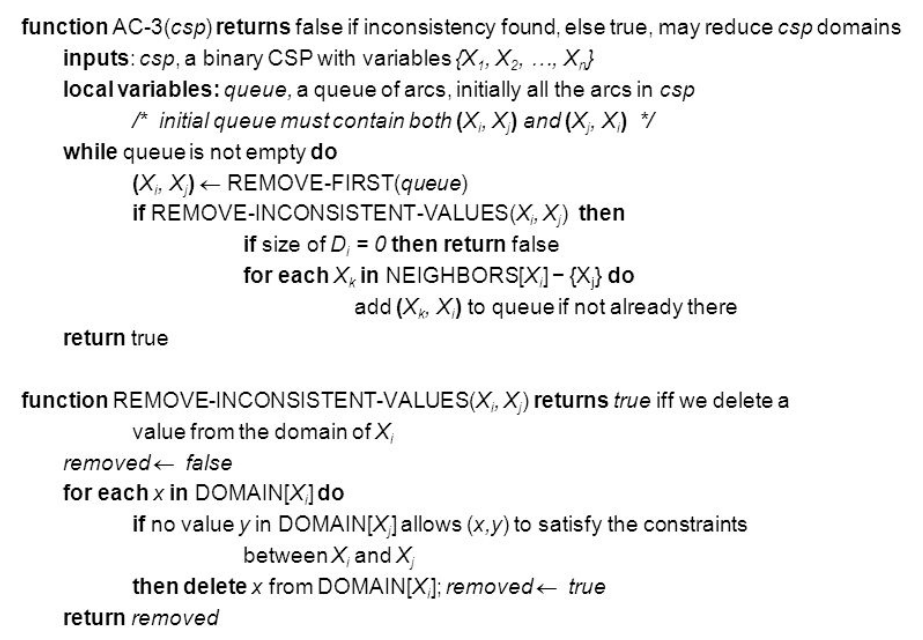
Algoritmo Consistencia de Arcos AC-3
EJEMPLO
Suponga que un robot necesita planificar las actividades de entrega de objetos \(a,\ b,\ c,\ d,\ e\) y que cada actividad ocurre en un tiempo 1, 2, 3 o 4.
¿Cuáles son las variables?
¿Cuáles son los dominios?
Algoritmo Consistencia de Arcos AC-3
EJEMPLO
Variables: A, B, C, D, E
Dominios: \(D_A = D_B = D_C= D_D = D_E = \{1,2,3,4\}\)
Restricciones del problema:
\[(B\neq 3) \wedge (C\neq 2)\wedge (A\neq B)\wedge (B\neq C)\wedge (C < D) \wedge (A=D) \wedge\]
\[(E < A) \wedge (E < B) \wedge (E < C) \wedge (E < D) \wedge (B \neq D)\]
Dibujemos el grafo de restricciones dominio consistente. Resolvamos el problema.
Solución: A=4, B=2, C=3, D=4, E=1.
Algoritmo Consistencia de Arcos AC-3
Estados en que termina el algoritmo:
- Algún dominio es vacío: no hay solución al CSP.
- Cada dominio tiene un valor único: existe una única solución.
- Cada dominio es no vacío y al menos uno contiene múltiples valores: en este caso cada dominio que no sea unitario debe ser dividido y luego se debe aplicar el algoritmo nuevamente a cada uno de los grafos obtenidos. Dividir el dominio no unitario más chico es usualmente más efectivo.
Bibliografía
Referencia Bibliográfica
 S. Russell y P.Norvig
Artificial Intelligence: A Modern Approach (Third Edition).
Capítulo 6
2009
S. Russell y P.Norvig
Artificial Intelligence: A Modern Approach (Third Edition).
Capítulo 6
2009
]] D. Poole, A. Mackworth y R. Goebel
Computational Intelligence: A Logical Approach.
Capítulo 4
1998